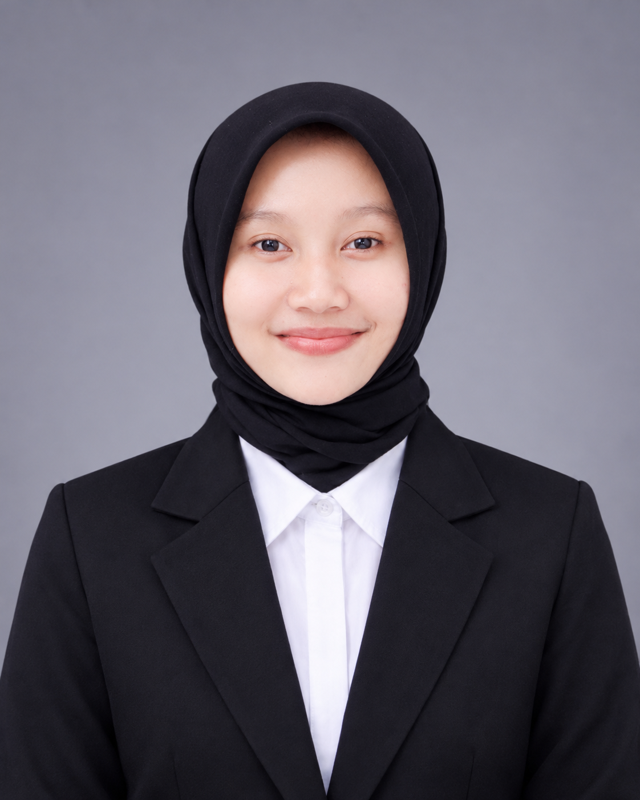

Web Development
Mempelajari dan mengembangkan website menggunakan HTML, CSS, PHP, dan Laravel.
Halo! Saya seorang mahasiswa D3 Teknologi Informasi di Politeknik Negeri Madiun yang memiliki ketertarikan besar terhadap dunia teknologi dan pengembangan perangkat lunak. Saya senang mempelajari hal-hal baru, mengembangkan ide kreatif, serta menciptakan solusi digital yang bermanfaat melalui teknologi.

JW'" >Saya merupakan mahasiswa D3 Teknologi Informasi di Politeknik Negeri Madiun. Saat ini, saya sedang memperdalam pengetahuan dan keterampilan di bidang teknologi informasi, khususnya pengembangan website, aplikasi mobile, serta pemrograman. Saya memiliki ketertarikan dalam mempelajari bagaimana teknologi dapat dimanfaatkan untuk menyelesaikan berbagai permasalahan sehari-hari. Dalam proses pembelajaran, saya senang mencoba hal-hal baru, mengeksplorasi teknologi, dan mengembangkan proyek sederhana sebagai sarana untuk meningkatkan kemampuan. Bagi saya, setiap proyek merupakan kesempatan untuk belajar, berinovasi, dan mengembangkan diri menjadi pribadi yang lebih kompeten di bidang teknologi informasi.
Saya terus mengembangkan kemampuan di bidang teknologi informasi melalui pembelajaran dan praktik secara langsung. Beberapa bidang yang saya minati meliputi pemrograman, pengembangan website, aplikasi Android, Internet of Things (IoT), serta pengelolaan basis data.
Beberapa kemampuan yang saya pelajari dan kembangkan melalui perkuliahan, praktikum, dan pengerjaan proyek.
Mempelajari dan mengembangkan website menggunakan HTML, CSS, PHP, dan Laravel.
Mengeksplorasi pembuatan aplikasi Android menggunakan Kotlin dan Flutter.
Mengembangkan perangkat pintar menggunakan ESP32, sensor, mikrokontroler, dan sistem monitoring.
Berikut beberapa proyek akademik dan hasil eksplorasi teknologi yang pernah saya kerjakan.
Mengembangkan sistem monitoring dan kontrol hidroponik menggunakan ESP32, sensor pH, TDS, suhu, pompa otomatis, serta panel surya. Sistem ini dirancang untuk membantu pemantauan kondisi tanaman secara lebih praktis.
Teknologi: ESP32, IoT, Firebase, Laravel, Kotlin, Sensor.
IoT ProjectMengembangkan aplikasi Android menggunakan Kotlin dengan fitur navigasi antarhalaman, tampilan antarmuka, pengelolaan data, dan integrasi Firebase.
Teknologi: Kotlin, Android Studio, Firebase.
Mobile DevelopmentMerancang dan mengembangkan konsep website pemesanan buket bunga secara online yang menyediakan katalog produk, informasi produk, dan fitur pemesanan.
Teknologi: HTML, CSS, PHP, Laravel, MySQL.
Web DevelopmentMembuat prototipe lengan robot menggunakan ESP32 dan beberapa motor servo. Pergerakan robot dikendalikan melalui koneksi Bluetooth menggunakan aplikasi Dabble.
Teknologi: ESP32, Servo Motor, Bluetooth, Dabble.
Robotics & IoTSetiap proyek menjadi pengalaman berharga bagi saya untuk meningkatkan kemampuan pemrograman, kreativitas, pemecahan masalah, serta pemahaman dalam penerapan teknologi informasi di kehidupan sehari-hari.
Punya ide, proyek, atau pertanyaan? Kirim pesan langsung ke WhatsApp saya.
Hubungi Saya via WhatsApp